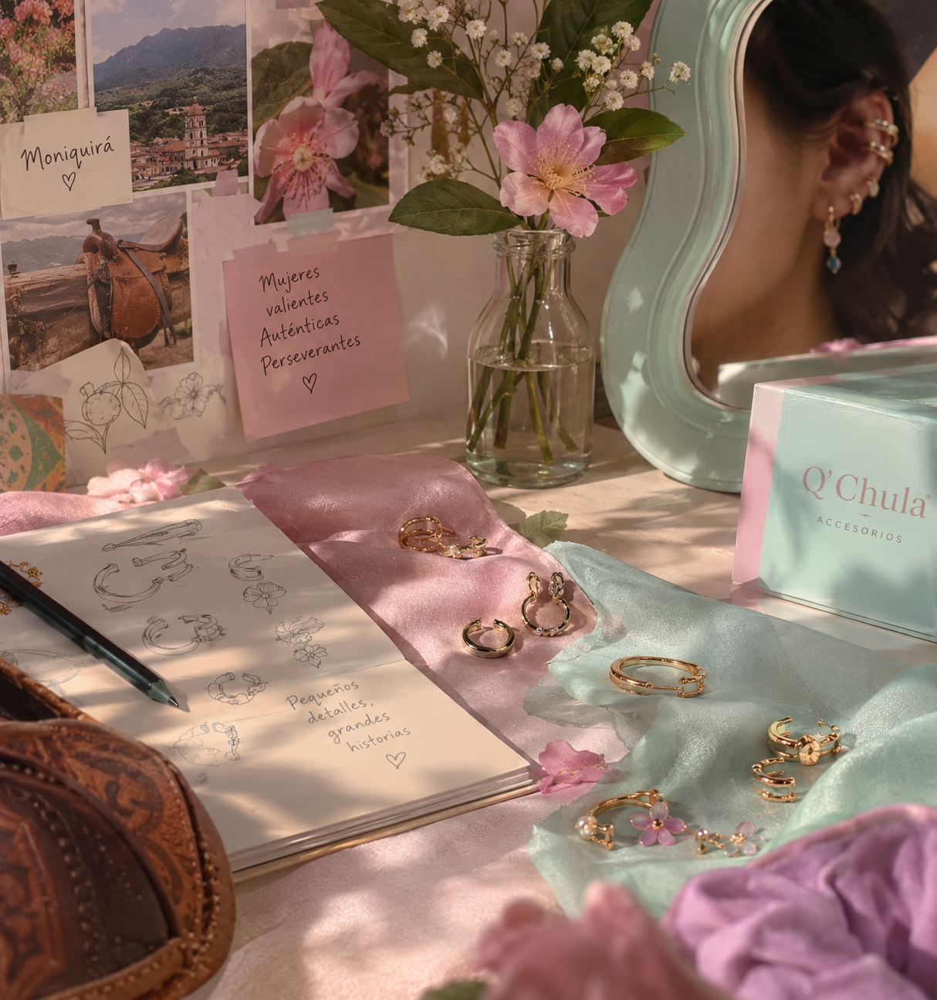

Autenticidad
Cada persona tiene una esencia diferente. Nos inspira la libertad de elegir y expresar un estilo que se sienta verdaderamente propio.
MÁS QUE ACCESORIOS
Detrás de cada detalle hay una forma de expresarse, una historia que contar y una mujer que no necesita dejar de ser ella misma para brillar.
CONOCE NUESTRA ESENCIA ↓
EL COMIENZO
Q’ Chula nació del gusto por los accesorios y de la ilusión de encontrar piezas capaces de transformar un estilo y hacer sentir especial a quien las lleva.
Con el tiempo, esa pasión se convirtió en una marca que busca ofrecer accesorios para diferentes personalidades, ocasiones y maneras de expresar la propia esencia.
Más que seguir una tendencia, Q’ Chula invita a elegir aquello con lo que cada mujer se identifica, porque el estilo también es una forma de contar quiénes somos.
Tu estilo. Tu esencia. Tu manera de brillar.EL SIGNIFICADO DETRÁS DEL NOMBRE
Chula: una palabra cercana, especial y llena de personalidad.
El nombre tiene un significado afectivo y familiar. Nace de un apodo lleno de cariño que terminó convirtiéndose en parte de la identidad de la marca.
Q’ Chula representa esa combinación entre cercanía, autenticidad y estilo que hace que cada detalle se sienta propio.
♡LO QUE NOS MUEVE
Creemos en mujeres que se expresan libremente, que reconocen su valor y que construyen su propio camino.
Cada persona tiene una esencia diferente. Nos inspira la libertad de elegir y expresar un estilo que se sienta verdaderamente propio.
Nos inspiran las mujeres que se atreven a ser ellas mismas, a tomar decisiones y a perseguir aquello que las hace felices.
Los pequeños pasos también construyen grandes historias. Valoramos el esfuerzo, la constancia y la ilusión de seguir creciendo.
NUESTRA FORMA DE VERLO
Para nosotras, un accesorio no tiene que ser grande ni llamativo para tener significado. A veces, un pequeño detalle es suficiente para completar un look, levantar el ánimo o recordar cómo queremos sentirnos.
Por eso, Q’ Chula celebra la diversidad de estilos y la posibilidad de reinventarse. Hoy puedes elegir algo delicado; mañana, algo atrevido. Ambas formas pueden ser parte de ti.
ESTE ESPACIO TAMBIÉN ES TUYO
Explora nuestras colecciones y descubre los accesorios que conectan con tu propia esencia.
EXPLORAR COLECCIONES ↗